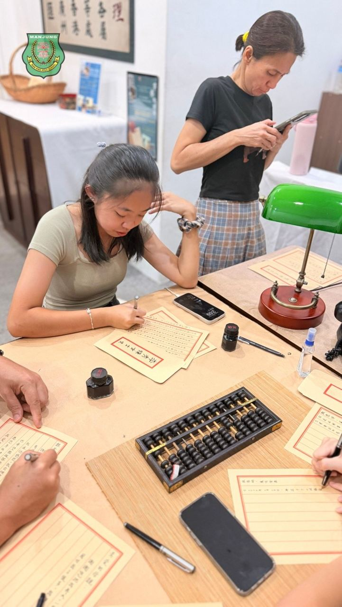
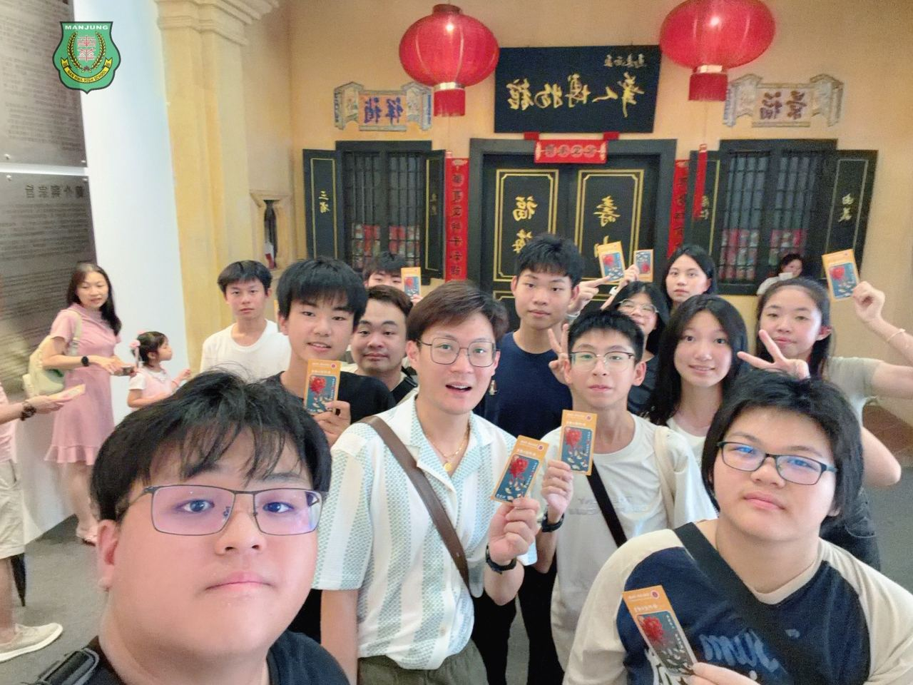
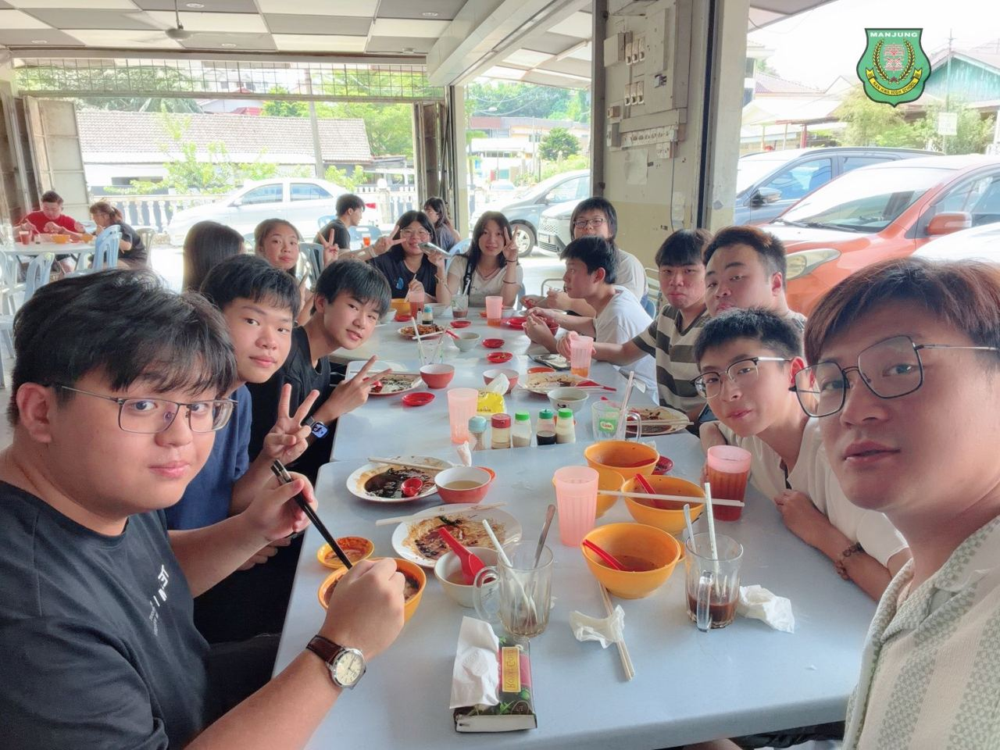
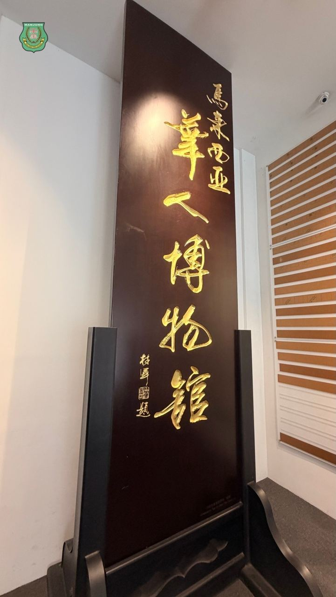
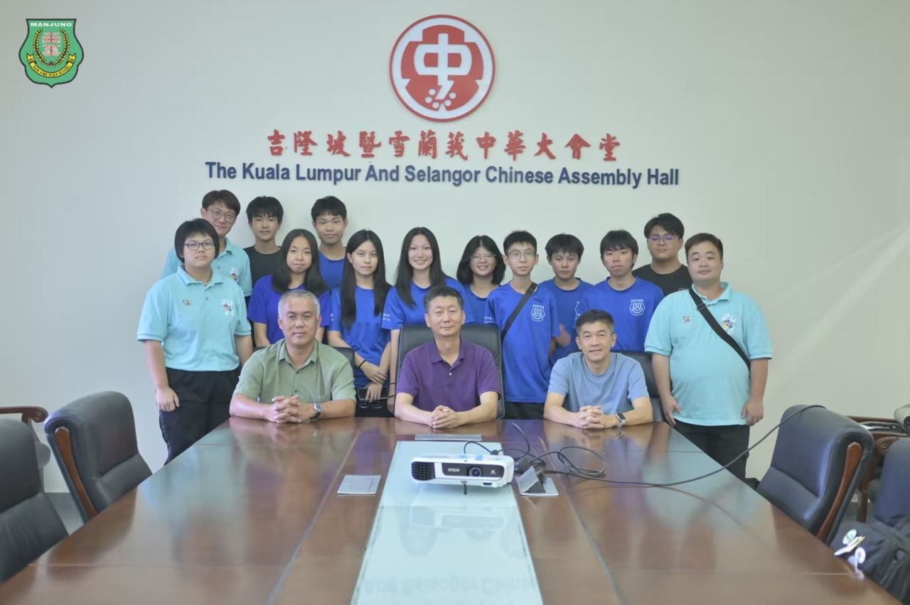
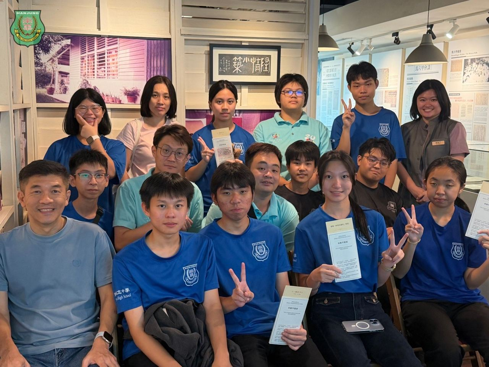

课本之外的南洋史诗：南华师生吉隆坡寻根手记 🎒✨
课本之外的南洋史诗：南华师生吉隆坡寻根手记 🎒✨
这两天，南华独中的10位同学在联课处老师的带领下，暂时放下紧凑的课业节奏，跨越山海，来了一场轻装上阵却分量十足的华人文化之旅。在大马华社的核心历史坐标间，青年学子们用脚步丈量历史，用视线触碰先辈扎根南洋的峥嵘岁月。
🏛️ 四大展馆的时光对谈
从隆雪华堂的时代风雨，到林连玉纪念馆、陈嘉庚纪念馆的先贤风骨，再到马来西亚华人博物馆陈列的万千岁月。师生一行穿梭于一件件历史文物与文献档案之间，慢慢拼凑出华裔先辈南渡扎根、在拓荒中坚守文化火种的史诗足迹。那些曾经只存在于课本上的冰冷名字，在此刻变得具象而温热。
🎬 银幕里的情感共鸣
除展馆研学外，同学们也一同观看了近期颇具深意的文化电影——《给阿嬷的情书》。大银幕上细腻交织的家族情感与南洋华人的付出精神，让不少同学悄然动容。通过光影的折射，南洋华人一路走来的情感纽带与坚韧精神，在青年的心中完成了一次无声的交接。
最让人欣喜的是，在这趟行程中，孩子们并未觉得历史枯燥，反而展现出浓厚的兴趣，愿意去倾听、去感受属于这片土地的故事。❤️ 本次行程也特别感谢学校董事们的全程陪伴与鼎力支持，让这段寻根旅程更加圆满。
🌱 老师寄语：
希望孩子们记得，文化绝不是停留在课本里的历史，而是流淌在我们身上、不断延续下去的记忆与力量。
🎒 带队老师：徐子轩老师、黄俊锦老师、潘柔榛老师






